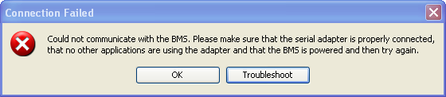

There are a number of reasons why the connection might fail. The common ones are:
Please attempt the following steps before contacting us for support.
Connection Specifications:
Baud-Rate: 9600
Stop-Bits: 1
Data-Bits: 8
Parity: Even
Diagnostic Steps:
Ensure the BMS is powered when connecting to the BMS.. The BMS requires external power to respond to the communication. At a minimum, +12V (up to +60V) must be applied either Main I/O connector pin 2 (Blue / READY mode power) or Main I/O pin 4 (Red / CHARGE mode power). Pin 6 must be connected to the power supply?s negative. The main I/O connector can be unplugged from the unit and a multimeter used to verify the power source. The power supply should also be checked when the unit is powered since it is possible that a connection is high resistance and there is a voltage drop causing the BMS not to receive full power. Additionally, the current draw can be checked to verify that the BMS is operating by measuring the current used by the BMS. It should be over 75mA and below 200mA.
Verify that the serial connection is correct by reading the section in the Wiring Manual "Digital RS232 Serial Communication". Incorrect wiring will prevent proper communication.
Restart the application and power cycle the BMS (remove all power from the BMS for > 45 seconds) and try again. Please note that new hardware versions of the Orion BMS are now able to remain alive in low power sleep for up to 30 seconds and actually require power disconnected for at least that length of time.
| < Appendix A: Troubleshooting Utility Connection | No Adapter Found (None Found) > |